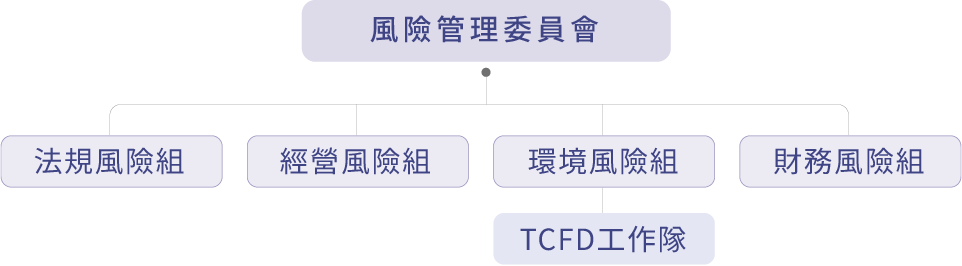
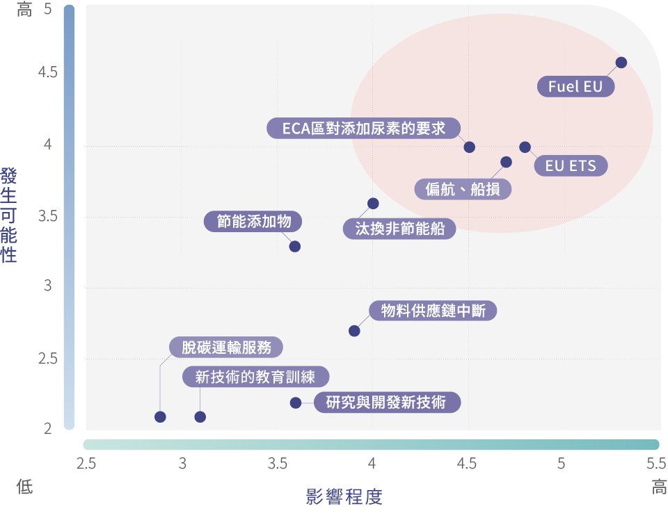

風險管理委員會功能推動
董事會為正德海運風險管理最高指導單位，負責審核年度風險管理報告。風險管理委員會各組每年評鑑經營上各類風險，除報告 ESG 重大事件包含經濟、環境和社會衝擊風險也包含 TCFD 風險與機會等，並將年度風險管理議題行動計畫目標的實施與績效結果向董事會提報，每年至少向董事會報告一次。
正德海運風險管理委員會

風險管理委員會職掌 :
主任委員：
由總經理擔任；兩處副總負責協助督導。
- 負責監督、核定風險管理政策。
- 重大風險議題及風險策略及資源需求之核定。
- 主持每季重大風險管理議題 (含執行檢討TCFD) 檢討及適應當時經營風險需求，調整風險管理議題。
- 定期向 (至少一年一次) 董事會呈報年度風險管理運作情況。
風險小組：
由相關部門主管負責辨識及衡量風險，執行降低或避免風險造成損害，並研擬減緩因應對策及執行改善。
TCFD工作隊：
隸屬於環境風險組，因應氣候變遷對財務有影響之各單位，負責鑑別評估氣候變遷對財務帶來風險及機會重大議題及應對策略方案；執行當年度核定重大議題及成果回報。
稽核室：
針對風險管理作業稽核，確保公司風險管理程序有效執行。
風險管理政策及程序
隨著全球化、地緣政治衝突、疾病與氣候變遷，威脅公司面臨的風險日趨多元且複雜，本公司風險管理政策為透過對潛在風險與轉型機會辨識鑑別、評估衡量、監督及管控之管理機制，降低經營可能面臨之各種風險發生機率，研擬因應對策，控制風險損害至可承受之範圍內，架構整體化之風險管理體系，促進以適切風險管理為導向之經營模式，達成營運目標，特制訂本政策。
風險鑑別
每年鑑別對公司船舶營運及營造具影響之新興風險及機會。
評估衡量
評估衡量年度重大新興風險議題及風險因應歸屬單位。
策略管理
研擬因應對策及措施管控機制。
監督
年度風險管理(含TCFD)執行報告陳報永續經營委員會，並提報董事會。
正德集團企業風險管理制定的目的為確保風險管理制度之完整性，因此從組織設計及內部各項管理制度執行均納入風險及防弊管控，以落實風險管理機制，提升風險管理分工效能，以期確保公司營運目標之達成。
2025年風險管理評估鑑別及相應管理減緩措施
本公司依據在 2024 年風險管理委員會所屬各組經執行「風險項目及減緩因應對策」的成果，並參考法規風險、經營風險、財務風險及環境風險 (TCFD) 四大風險類別，鑑別出 2025 年度管控議題及評估衡量結果，並提出因應對策，經風險管理委員會評估各部門提出 15 個風險項目，以「中度風險」評選定 8 個項目作為 2025 年度風險管控執行項目，交各相關組別執行情況。
本公司執行 2025 年風險議題，經過每季檢討，委員會彙整成「風險管理及減緩措施執行成果」管理如下表，並於 2025 年 12 月 18 日向董事會提報審核。
2025 年度風險管理及減緩措施執行成果
| 風險組別(項目) | 風險說明 | 風險減緩作業因應對策 2025年執行情況說明及改善建議 |
|---|---|---|
| 經營風險 (市場) | 期租船舶市場租金波動，去全球化：『美國關稅戰』對各國貿易的衝擊，造成租船市場變化與客戶營收不穩定，間接影響客戶合約履行能力 |
|
| 經營風險 (市場) | 期租船舶市場租金波動，去全球化：『美國徵收靠港稅』對各國貿易的衝擊，造成租船市場變化與客戶營收不穩定，間接影響客戶合約履行能力 |
|
| 經營風險 (制裁) | 租家前往制裁區遭逢事故，導致公司船舶受連帶處罰或無法營運 |
|
| 經營風險 (市場) | 租家前往高風險區(含內戰區)遭逢事故，導致公司受或船舶營運中斷或經濟損失 |
|
| 財務風險 (利率) | 風險主要來自交易風險及會計風險，利率上揚可能增加之利息支出 |
|
| 財務風險 (匯率) | 匯率波動對公司影響 (美元升 / 貶值) |
|
| 經營風險 (資訊安全) | 資料備份 - 人員操作不慎造成資料輸入錯誤或檔案遺失 |
|
| 經營風險 (資訊安全) | 外部惡意攻擊，造成資料外洩或通訊服務中斷 |
|
2026年風險管理評估鑑別及相應管理減緩措施
本公司 2025 年 11 月底依循風險管理流程包括風險鑑別、評估衡量、策略管理與監督等作業及當年度執行成果，進行 2026 年度風險管理調查，風險區分為法規風險、經營風險、財務風險及環境風險四大類別，資產營建自 2025 年已陸續建案推動，各部門提報 2026 年風險項目及因應措施 ( 含資產營造 )，經委員會參考當前世界地緣政治衝突、氣候變遷威脅公司營運面臨的風險等因素，2025 年 12 月 12 日風險管理委員會審核，經裁示將四組類別風險達「中度風險」( 含 ) 以上列為 2026 年度風險管理執行管控項目，並提出風險減緩作業因應對策。
2026 年度風險管理及減緩措施應對表
| 風險組別(項目) | 風險說明 | 2026年風險減緩作業因應對策 |
|---|---|---|
| 財務風險 (利率) | 因行業特性屬重資本投入，資金需求龐大；且因船舶融資為長天期，利息費用將因市場利率波動而變化 |
|
| 財務風險 (匯率) | 營業收入及營業成本多以美元計價，僅員工薪資及營業費用等小額支出需由美金兌換為新臺幣支付，匯率變動對本業營收影響不大 |
|
| 經營風險 (市場) | 期租船舶市場租金波動，去全球化：『美國徵收靠港稅』對各國貿易的衝擊，造成租船市場變化與客戶營收不穩定，間接影響客戶合約履行能力 |
|
| 法規風險 (制裁) | 租家前往制裁區遭逢事故，導致公司受或船舶受連帶處罰無法營運或處罰 |
|
| 法規風險 (高風險區) | 租家前往高風險區(含內戰區)遭逢事故，導致公司受或船舶營運中斷或經濟損失 |
|
| 經營風險 (市場) | 『104年10月10日公告，自10月14日起，徵收中國特別港口服務費』潛在可能造成船東成本增加 |
|
| 經營風險 (資安) | 外部惡意攻擊，造成資料外洩或通訊服務中斷 |
|
| 經營風險 (資安) | 資料備份 - 人員操作不慎造成資料輸入錯誤或檔案遺失 |
|
| 經營風險 (資產) | 營造廠履約風險及工程品質不良 |
|
氣候變遷影響財務風險 (TCFD)
全球氣候變遷，造成極端天氣，除會提高船舶航行安全風險，也是全球企業在永續經營發展過程中需要面對的重要課題；海運業面臨國際海事組織 (IMO) 對減碳規定日趨嚴格，除限制船舶碳排放量，歐盟碳邊境調整機制 (CBAM)、徵收碳稅，以及推動碳足跡查證及環境績效相關驗證，都將航運企業營運產生重大衝擊；資產企業也因氣候異常颱風大雨淹水等因素產生營建案件嚴重影響。
節能減碳議題與企業所提供的船舶服務緊密結合，直接和間接影響到企業的營運。由於提供船舶運載租賃服務是本公司主要業務；因此，全球氣候的變遷與碳排放限制將影響營運，在面對減碳及營運成本壓力下，正德海運除推行節能減碳運動、計畫性造新船淘汰舊船以及增加能源效率外，同時亦逐漸降低碳排放量，並設置建造節能船專責團隊，提高船舶的競爭力，化危機為轉機。
本公司也制定永續發展實務守則，推動發展永續環境相關政策，以因應氣候變遷的作為，並進行氣候變遷風險與機會評估，依據評估結果，加以制定管理策略、溫室氣體盤查、碳減量計畫，期望減少能源消耗並降低碳排放，提升減碳管理績效，展現正德海運於氣候議題上的企業責任心，進而更有效率的配置資本，邁向低碳經濟的永續發展，以落實企業永續發展之目標。
正德海運持續將氣候變遷管理視為重大風險管理工作項目，除管理與監督氣候變遷對企業帶來之風險與機會，也於營運管理規劃及決策過程中導入氣候相關財務揭露架構 (Task Force on Climate-Related Financeial Disclosures，TCFD) 作為氣候風險管理之依據，鑑別氣候變遷為本公司帶來的風險，透過治理、策略、風險管理、指標與目標四大面向，研擬相對應措施。
2025 年列入「2025 年氣候相關財務揭露 (TCFD)」共計 4 項目；由各組負責執行，在當年度中風險管理委員會 ( 含 TCFD) 共計開會檢討 4 次 ; 於 2025 年 12 月 18 日向董事會提報 2025 年 TCFD 執行情況報告。
TCFD 治理
為落實減碳目標，與有效執行和追蹤監測減碳路徑，在現有風險管理委員會環境風險組織功能下設置「TCFD 風險工作隊」；由風險管理委員會主任委員主責氣候治理政策訂定與依循準則等相關的確定，包含 TCFD 風險管理，從業務、船務、海勤到採購各功能單位，將氣候治理納入原有之風險管理作業流程之中，透過風險管理機制提升公司永續價值。
- 董事會為氣候變遷管理最高監督單位。
- 總經理擔任風險管理主任委員，兩處副總擔任督導。
- TCFD 工作隊，執行鑑別出氣候變遷相關方案及提出執行報告。
- TCFD 工作隊將當年度氣候變遷相關方案執行情況及成果製作成報告，每年年底提交主任委員審核；並呈報董事會，確保氣候變遷風險管理有效推行及作為後續執行計畫需求資源審核。
風險機會及策略
面對日益嚴峻氣候變遷及溫室氣體減量相關法規日趨嚴格，正德持續關注國際最新氣候議題及航運產業減碳策略規定，這都將對企業營運產生重大衝擊。依據氣候變遷對財務影響 (TCFD) 之架構，全面檢視公司面臨之氣候變遷帶來之風險、機會，透過情境分析與財務衝擊評估，提出相關應對措施，減低氣候風險對公司營運帶來的危害。
氣候變遷風險矩陣
2025 年正德海運參考 TCFD 要求，羅列船隊國內外航行各之氣候變遷對財務影響相關風險項目做為參考，透過辨識不同業務在短中長期時間之氣候風險與機會，研擬合理情境假設，評估氣候風險對相關業務的影響程度，設計評估問卷並發放與各單位評估氣候相關風險項目重要性，與影響程度及重要性，製作成氣候變遷風險矩陣，經評估分析選定 2025 年正德海運氣候變遷風險機會項目並擬定相對應的管理作為或因應策略，必要時將設定管理指標與目標，以強化本公司對於特定氣候風險控管與機會掌握整理出多項與公司財務相關之氣候變遷風險項目。

2025 年度 TCFD 風險控管程度
轉型風險情境分析
轉型風險採用國際能源署 (International Energy Agency； IEA)2022 年世界能源展望會 (WEO) 中的情境 (NZE)、歐盟 FF55 及數據取得性及可量化原則；資產營建實體風險採用，依照聯合國政府間氣候變遷專門委員會（ Intergovernmental Panel on Climate Change, IPCC）第 6 次評估報告（Assessment Report 6, AR6）中，以「代表濃度途徑 」（Representative Concentration Pathways, RCPs）定義未來氣候變遷的情境 RCP 8.5，以及依據研究文獻對各區淹水之房價影響報告，藉由模型模擬帶入衝擊評估相關參數 ( 如：降雨量、都市排水標準、淹水潛勢、淹水對房價影響 )，估算淹水對房貸業務的財務衝擊。評估鑑別出轉型風險對正德可能產生的衝擊。
情境分析與關鍵議題假設
| 風險議題 | 情境分析與關鍵議題假設 | 評估時間 | 財務影響 |
|---|---|---|---|
| 總量管制與排放交易 | 營造廠履約風險，因營造廠財務不佳造成工程延宕、工程品質問題或倒閉 | 2025 | 營運成本增加 |
| 航運業強制性法規 |
IMO減碳目標
|
2022~2025 | 資本支出及營運成本增加 |
| 氣候異常強降雨造成淹水對房屋價格的跌價損失 |
利用IPCC AR6中使用之第六次耦合氣候模式比對實驗（Coupled Model Intercomparison Project Phase 6，CMIP6）大氣環流模式（Global Circulation model，GCM）資料，作為未來情境之合成氣象資料來源。探討淹水對房屋之跌價損失及對貸款價值比（LTV）之變化。 |
2025 | 資本支出及營運成本增加 |
2025 年氣候相關財務揭露 (TCFD) 執行報告
隨著全球化、地緣政治衝突、疾病與氣候變遷，威脅公司面臨的風險日趨多元且複雜，本公司執行「2025 年氣候相關財務揭露 (TCFD)」，報告年度執行及因應措施成果報告如下表 ; 並於 2025 年 12 月 18 日向董事會報告。
2025 年度 TCFD 執行報告
| 核心要素 | 鑑別項目 | 氣候變遷相關災害 | 潛在財務影響 | 嚴重度 | 影響時間 | 因應對策 | 2025年執行成果 |
|---|---|---|---|---|---|---|---|
| 轉型風險 | 政策與法規風險 | Fuel EU（歐盟海運燃料條款，2025/1/1實施） | 前往歐盟港口航次，需繳交罰款 | 高 | 長期 | 逐航次計算溫室氣體超出數量，已於合約修訂條約向租船人收取 | 產生CO2e數量餘額與赤字各別為： +111.2 (租家使用生質燃油所產生餘額)； -191.1(不同租家總計產生之赤字) 由租家承擔費用 |
| 轉型風險 | 政策與法規風險 | EU ETS（歐盟碳排放體系） | 前往歐盟港口航次，需繳交碳稅，每單位約EUR60-100 | 高 | 長期 | 逐航次計算ETS產生數量，已制定於合約向租船人收取等量的碳權 | 產生7,948.3 ETS，由租家承擔費用 |
| 實體風險 | 立即性 | 惡劣天氣之偏航、船損 |
|
高 | 長期 | 聘用氣象導航，海技單位輔助提醒避開惡劣天候海象，同時避開船損風險 | 無因氣候所導致的船損或營損情況發生 |
| 轉型風險 | 政策與法規風險 | TierⅢ主機vm進ECA區需添加尿素，尿素可供應有限，可能導致船隊無法按時補給，影響航程安排 | 新造船TierⅢ主機對油品的要求以及增加尿素/氫氧化鈉等產品的營業成本 | 高 | 長期 |
短期對策： 中長期策略： |
|
2026 年 TCFD 管理調查報告
風險管理委員會 (TCFD 工作隊 ) 因應氣候變遷對財務帶來影響的議題，持續將氣候變遷管理視為重大風險工作項目。2025 年 12 月初提報 2026 年風險項目及因應措施 ( 含 TCFD)，經委員會參考當前租家規劃未來航行地區及氣候變遷等風險，因氣候變遷威脅公司營運面臨的風險等因素，經裁示將風險達「中度風險」以上列為 2026 年度 TCFD 管理執行管控項目，並提出風險減緩作業因應對策如下 :
2026 年度 TCFD 管理項目
| 核心要素 | 鑑別項目 | 氣候變遷相關災害 | 潛在財務影響 | 嚴重度 | 影響時間 | 因應對策 |
|---|---|---|---|---|---|---|
| 轉型風險 | 政策與法規風險 | Fuel EU（歐盟海運燃料條款） | 前往歐盟港口航次，需繳交罰款 | 中 | 長期 | 逐航次計算溫室氣體超出數量，已於合約修訂條約向租船人收取 |
| 轉型風險 | 政策與法規風險 | EU ETS（歐盟碳排放體系） | 前往歐盟港口航次，需繳交碳稅，每單位約EUR60-100 | 中 | 長期 | 逐航次計算ETS產生數量，已制定於合約向租船人收取等量的碳權 |
| 實體風險 | 立即性 | 惡劣天氣之偏航、船損 |
|
中 | 長期 | 聘用氣象導航，海技單位輔助提醒避開惡劣天候海象，同時避開船損風險 |
| 轉型風險 | 政策與法規風險 |
IMO Tier III 法規驅動之關鍵營運物料供應鏈韌性與成本管理。 因應法規要求，ECA 區域運行之 SCR 系統需穩定供應尿素，受全球能源政策影響，尿素已轉化為關鍵營運支出 |
|
中 | 長期 |
短期對策： 中長期對策： |
| 實體風險 | 立即性 | 極端氣候事件或地緣政治衝突 (如戰爭) 可能導致原物料及能源價格波動，對全球尿素產能與物流鏈形成不確定性 |
|
中 | 長期 |
短期對策： 中長期對策： |
指標與目標
正德積極配合主管機關「上市櫃公司永續發展路徑圖」將氣候相關風險納入現有新興風險管理機制，每年鑑別及評估衡量氣候風險可能造成之損失，並針對新興風險管理情形向風險管理委員會陳報，納入風險管理報告書併同提報董事會，以進行全面性有效掌握海運碳排放量與能源使用效率之管理。
指標與目標行動：
- 新船採取符合國際公約之 EEDI，並導入評估現成船舶與氣候議題相關之 EEXI、CII 等指標。並持續本公司船舶耗能及排放情形參照 GRI 302 及 GRI 305 指引建立溫室氣體排放指標，於 ESG 報告書中揭露。
- 在符合法規前提下，進一步再探討以增加節能環保新船投資或改裝船舶設備，以降低環境衝擊之可行性。